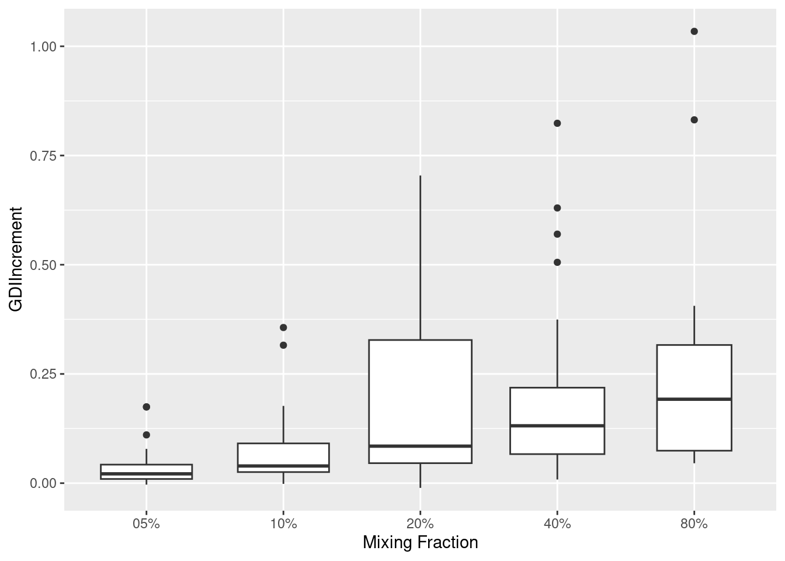

library(assertthat)
library(rlang)
library(stringr)
library(scales)
library(ggplot2)
library(zeallot)
library(conflicted)
library(data.table)
library(tibble)
library(tidyr)
# Data processing libs
if (!suppressWarnings(require(COTAN))) {
devtools::load_all("~/dev/COTAN/COTAN/")
}
library(parallelDist)
conflicts_prefer(zeallot::`%->%`, zeallot::`%<-%`)
options(parallelly.fork.enable = TRUE)
inDir <- file.path("Data/Brown_PBMC_Datasets/")
outDir <- file.path("Results/GDI_Sensitivity/PBMCBrownRun40/")
setLoggingLevel(2)
setLoggingFile(file.path(inDir, "MixingClustersForGDIDelta.log"))Mixing Uniform Clusters To Estimate GDI Sensitivity using Run 40
Preamble
Loading all COTAN Objects
list.files(path = inDir, pattern = "\\.RDS$") [1] "capillary_blood_samples_pbmcs-Run_28.RDS"
[2] "capillary_blood_samples_pbmcs-Run_40-Cleaned.RDS"
[3] "capillary_blood_samples_pbmcs-Run_40.RDS"
[4] "capillary_blood_samples_pbmcs-Run_41-Cleaned.RDS"
[5] "capillary_blood_samples_pbmcs-Run_41.RDS"
[6] "capillary_blood_samples_pbmcs-Run_62.RDS"
[7] "capillary_blood_samples_pbmcs-Run_77-Cleaned.RDS"
[8] "capillary_blood_samples_pbmcs-Run_77.RDS"
[9] "capillary_blood_samples_pbmcs.RDS"
[10] "CD4Tcells-Run_40-Cleaned.RDS"
[11] "Run_40Cl_0CD4TcellsRawData.RDS"
[12] "Run_40Cl_1CD4TcellsRawData.RDS"
[13] "Run_40Cl_5CD4TcellsRawData.RDS"
[14] "Run_40Cl_7CD4TcellsRawData.RDS"
[15] "Run_40Cl_8CD4TcellsRawData.RDS"
[16] "Run_40Cl_9CD4TcellsRawData.RDS" globalCondition <- "capillary_blood_samples_pbmcs"
thisRun <- "40"
fileNameIn <- paste0(globalCondition, "-Run_", thisRun, "-Cleaned.RDS")Load COTAN object
aRunObj <- readRDS(file = file.path(inDir, fileNameIn))
sampleCondition <- getMetadataElement(aRunObj, datasetTags()[["cond"]])[[1L]]
getClusterizations(aRunObj) [1] "cell_type_level_1" "cell_type_level_2" "cell_type_level_3"
[4] "cell_type_level_4" "c1" "c2"
[7] "c3" "c4" "Sample_C3"
[10] "SelUnifCl" relevantClusters <- getClusters(aRunObj, clName = "SelUnifCl")###Relevant clusters
relevantClustersList <- toClustersList(relevantClusters)
relevantClustersList <- relevantClustersList[names(relevantClustersList) != "Other"]Collect size and GDI for all selected clusters (baseline data)
fileNameRelData <- file.path(outDir, "relevantClChecksRes.csv")
relevantResData <- read.csv(file = fileNameRelData,
header = TRUE, row.names = 1L)
relevantResData <- relevantResData[rownames(relevantResData) != "Other", ]
baselineGDI <- relevantResData[, c("clusterSize", "check.quantileAtRatio")]
colnames(baselineGDI) <- c("size", "GDI")
write.csv(baselineGDI, file = file.path(outDir, "BaselineGDI.csv"))Load baseline data
baselineGDI <- read.csv(file = file.path(outDir, "BaselineGDI.csv"),
header = TRUE, row.names = 1L)Calculate the GDI of the mixtures of clusters
Define all mixing fractions
allMixingFractions <- c(0.05, 0.10, 0.20, 0.40, 0.80)
names(allMixingFractions) <-
str_pad(scales::label_percent()(allMixingFractions), 3, pad = "0")This is to be run once per wanted mixing-fraction
# small run
#
set.seed(137)
for (mixingStr in names(allMixingFractions)) {
mixingFraction <- allMixingFractions[[mixingStr]]
resFileOut <-
file.path(outDir, paste0("GDI_with_", mixingStr, "_Mixing.RDS"))
results <- data.frame()
for (mainName in rownames(baselineGDI)) {
mainSize <- baselineGDI[mainName, "size"]
mainGDI <- baselineGDI[mainName, "GDI"]
mainCluster <- relevantClustersList[[mainName]]
for (clName in rownames(baselineGDI)) {
if (clName == mainName) next
logThis(paste("Mixing", mainName, "with extra",
mixingStr, "cells from", clName), logLevel = 1)
clSize <- baselineGDI[clName, "size"]
actuallyMixedCells <- min(ceiling(mixingFraction * mainSize), clSize)
actualFraction <- actuallyMixedCells / mainSize
sampledCluster <- sample(relevantClustersList[[clName]], actuallyMixedCells)
cellsToDrop <- !(getCells(aRunObj) %in% c(mainCluster, sampledCluster))
mixedObj <- dropGenesCells(aRunObj, cells = getCells(aRunObj)[cellsToDrop])
# Calculate the merged COEX (1 core to avoid multi-process issues)
mixedObj <- proceedToCoex(mixedObj, calcCoex = TRUE, cores = 1L)
# Extract the GDI quantile
mixedGDIData <- calculateGDI(mixedObj)
rm(mixedObj)
gdi <- getColumnFromDF(mixedGDIData, colName = "GDI")
gdi <- sort(gdi, decreasing = TRUE)
lastPercentile <- quantile(gdi, probs = 0.99)
rm(gdi)
GDIIncr <- lastPercentile - mainGDI
results <-
rbind(
results,
data.frame(
"MainCluster" = mainName,
"OtherCluster" = clName,
"MixingFraction" = actualFraction,
"GDI" = lastPercentile,
"GDIIncrement" = GDIIncr
)
)
logThis(
paste("Mixing", mainName, "with", mixingStr, "of", clName,
"accomplished with GDI", lastPercentile, "and increment", GDIIncr),
logLevel = 1)
}
# save at each mainCuster so not to loose effort in case of errors
rownames(results) <- NULL
saveRDS(results, resFileOut)
}
}Load calculated data for analysis
allResList <-
lapply(
names(allMixingFractions),
function(mixStr) {
readRDS(file.path(outDir, paste0("GDI_with_", mixStr, "_Mixing.RDS")))
})
names(allResList) <- names(allMixingFractions)
assert_that(unique(sapply(allResList, ncol)) == 5L)[1] TRUEMerge all results and calculate the fitting regression for each cluster pair
allRes <- cbind(allResList[[1L]][, 1:2],
lapply(allResList, function(df) { df[, 3:5] }))
colnames(allRes) <-
c(colnames(allResList[[1L]])[1:2],
paste0(
rep(colnames(allResList[[1L]])[3:5], 5),
"_",
rep(names(allMixingFractions), each = 3)
)
)Recall cluster distance and add it to the results
zeroOneAvg <- readRDS(file.path(outDir, "allZeroOne.RDS"))
# zeroOneAvg <- readRDS(file.path(outDir, "distanceZeroOne.RDS"))
distZeroOne <-
as.matrix(parDist(t(zeroOneAvg), method = "hellinger",
diag = TRUE, upper = TRUE))^2
distZeroOneLong <-
rownames_to_column(as.data.frame(distZeroOne), var = "MainCluster")
distZeroOneLong <-
pivot_longer(distZeroOneLong,
cols = !MainCluster,
names_to = "OtherCluster",
values_to = "Distance")
distZeroOneLong <-
as.data.frame(distZeroOneLong[distZeroOneLong[["Distance"]] != 0.0, ])
assert_that(identical(distZeroOneLong[, 1:2], allRes[, 1:2]))[1] TRUEperm <- order(distZeroOneLong[["Distance"]])Scatter plot of ΔGDI vs Distance
Merge all data and plot it using a-priory (squared) distance as discriminant
allResPerm <- do.call(rbind,lapply(allResList, function(df) df[perm, ]))
rownames(allResPerm) <- NULL
allResPerm <-
cbind(allResPerm,
"ClusterPair" = rep.int(seq_along(perm), 5),
"Distance" = rep(distZeroOneLong[["Distance"]][perm], 5))
head(allResPerm) MainCluster OtherCluster MixingFraction GDI GDIIncrement ClusterPair
1 0 5 0.05000000 1.443775 0.0222651676 1
2 5 0 0.05122951 1.384208 0.0173951251 2
3 0 1 0.05000000 1.438330 0.0168202884 3
4 1 0 0.05112782 1.379750 0.0286431493 4
5 0 9 0.05000000 1.426839 0.0053299285 5
6 9 0 0.05333333 1.361838 -0.0005519038 6
Distance
1 0.01489277
2 0.01489277
3 0.02026159
4 0.02026159
5 0.02928972
6 0.02928972mg <- function(mixing) { round(log2(mixing * 40)) }
IScPlot <- ggplot(allResPerm,
aes(x = paste0(mg(MixingFraction)),
y = GDIIncrement,
group = mg(MixingFraction))) +
geom_boxplot(varwidth = TRUE) +
scale_x_discrete(
breaks = paste0(mg(allMixingFractions)),
labels = names(allMixingFractions)
) +
labs(x = "Mixing Fraction") +
theme(plot.title = element_blank())
plot(IScPlot)
Sys.time()[1] "2026-02-02 16:06:22 CET"#Sys.info()
sessionInfo()R version 4.5.2 (2025-10-31)
Platform: x86_64-pc-linux-gnu
Running under: Ubuntu 22.04.5 LTS
Matrix products: default
BLAS: /usr/lib/x86_64-linux-gnu/blas/libblas.so.3.10.0
LAPACK: /usr/lib/x86_64-linux-gnu/lapack/liblapack.so.3.10.0 LAPACK version 3.10.0
locale:
[1] LC_CTYPE=C.UTF-8 LC_NUMERIC=C LC_TIME=C.UTF-8
[4] LC_COLLATE=C.UTF-8 LC_MONETARY=C.UTF-8 LC_MESSAGES=C.UTF-8
[7] LC_PAPER=C.UTF-8 LC_NAME=C LC_ADDRESS=C
[10] LC_TELEPHONE=C LC_MEASUREMENT=C.UTF-8 LC_IDENTIFICATION=C
time zone: Europe/Rome
tzcode source: system (glibc)
attached base packages:
[1] stats graphics grDevices utils datasets methods base
other attached packages:
[1] parallelDist_0.2.6 COTAN_2.11.1 tidyr_1.3.1 tibble_3.3.0
[5] data.table_1.18.0 conflicted_1.2.0 zeallot_0.2.0 ggplot2_4.0.1
[9] scales_1.4.0 stringr_1.6.0 rlang_1.1.7 assertthat_0.2.1
loaded via a namespace (and not attached):
[1] RcppAnnoy_0.0.22 splines_4.5.2
[3] later_1.4.2 polyclip_1.10-7
[5] fastDummies_1.7.5 lifecycle_1.0.4
[7] doParallel_1.0.17 globals_0.18.0
[9] lattice_0.22-7 MASS_7.3-65
[11] ggdist_3.3.3 dendextend_1.19.0
[13] magrittr_2.0.4 plotly_4.12.0
[15] rmarkdown_2.29 yaml_2.3.12
[17] httpuv_1.6.16 otel_0.2.0
[19] Seurat_5.4.0 sctransform_0.4.2
[21] spam_2.11-1 sp_2.2-0
[23] spatstat.sparse_3.1-0 reticulate_1.44.1
[25] cowplot_1.2.0 pbapply_1.7-2
[27] RColorBrewer_1.1-3 abind_1.4-8
[29] Rtsne_0.17 GenomicRanges_1.62.1
[31] purrr_1.2.0 BiocGenerics_0.56.0
[33] circlize_0.4.16 GenomeInfoDbData_1.2.14
[35] IRanges_2.44.0 S4Vectors_0.48.0
[37] ggrepel_0.9.6 irlba_2.3.5.1
[39] listenv_0.10.0 spatstat.utils_3.2-1
[41] goftest_1.2-3 RSpectra_0.16-2
[43] spatstat.random_3.4-3 fitdistrplus_1.2-2
[45] parallelly_1.46.0 codetools_0.2-20
[47] DelayedArray_0.36.0 tidyselect_1.2.1
[49] shape_1.4.6.1 UCSC.utils_1.4.0
[51] farver_2.1.2 ScaledMatrix_1.16.0
[53] viridis_0.6.5 matrixStats_1.5.0
[55] stats4_4.5.2 spatstat.explore_3.7-0
[57] Seqinfo_1.0.0 jsonlite_2.0.0
[59] GetoptLong_1.1.0 progressr_0.18.0
[61] ggridges_0.5.6 survival_3.8-3
[63] iterators_1.0.14 foreach_1.5.2
[65] tools_4.5.2 ica_1.0-3
[67] Rcpp_1.1.0 glue_1.8.0
[69] gridExtra_2.3 SparseArray_1.10.8
[71] xfun_0.52 distributional_0.6.0
[73] MatrixGenerics_1.22.0 ggthemes_5.2.0
[75] GenomeInfoDb_1.44.0 dplyr_1.1.4
[77] withr_3.0.2 fastmap_1.2.0
[79] digest_0.6.37 rsvd_1.0.5
[81] R6_2.6.1 mime_0.13
[83] colorspace_2.1-1 scattermore_1.2
[85] tensor_1.5 spatstat.data_3.1-9
[87] generics_0.1.3 httr_1.4.7
[89] htmlwidgets_1.6.4 S4Arrays_1.10.1
[91] uwot_0.2.3 pkgconfig_2.0.3
[93] gtable_0.3.6 ComplexHeatmap_2.26.0
[95] lmtest_0.9-40 S7_0.2.1
[97] SingleCellExperiment_1.32.0 XVector_0.50.0
[99] htmltools_0.5.8.1 dotCall64_1.2
[101] zigg_0.0.2 clue_0.3-66
[103] SeuratObject_5.3.0 Biobase_2.70.0
[105] png_0.1-8 spatstat.univar_3.1-6
[107] knitr_1.50 reshape2_1.4.4
[109] rjson_0.2.23 nlme_3.1-168
[111] proxy_0.4-29 cachem_1.1.0
[113] zoo_1.8-14 GlobalOptions_0.1.2
[115] KernSmooth_2.23-26 parallel_4.5.2
[117] miniUI_0.1.2 pillar_1.11.1
[119] grid_4.5.2 vctrs_0.7.0
[121] RANN_2.6.2 promises_1.5.0
[123] BiocSingular_1.26.1 beachmat_2.26.0
[125] xtable_1.8-4 cluster_2.1.8.1
[127] evaluate_1.0.5 cli_3.6.5
[129] compiler_4.5.2 crayon_1.5.3
[131] future.apply_1.20.0 labeling_0.4.3
[133] plyr_1.8.9 stringi_1.8.7
[135] viridisLite_0.4.2 deldir_2.0-4
[137] BiocParallel_1.44.0 lazyeval_0.2.2
[139] spatstat.geom_3.7-0 Matrix_1.7-4
[141] RcppHNSW_0.6.0 patchwork_1.3.2
[143] future_1.69.0 shiny_1.12.1
[145] SummarizedExperiment_1.38.1 ROCR_1.0-11
[147] Rfast_2.1.5.1 igraph_2.2.1
[149] memoise_2.0.1 RcppParallel_5.1.10